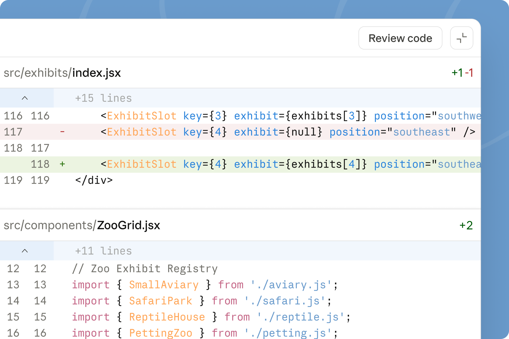

Claude Code
Claude Code works with the files in a project folder. Use plain language to plan a small tool, review the changes, try the result and decide what to improve. These exercises use the desktop app.
An optional extension to Automate → WebApp → Agents. Return to the same classroom barrier and compare what a different builder makes.
Best for
Taking a small classroom tool beyond a chat: project files, repeatable instructions and a running preview.
Start here
The Code tab in Claude Desktop, with a paid subscription that includes Claude Code. Check your account access in the official quickstart.
Hong Kong is not on Anthropic’s supported-locations list. Use this optional guide only where Claude is supported and your school permits it. The main workshop uses the regionally available tools in the workshop flow.
Based on official documentation checked on 6 November 2026. The classroom prompts below are suggested exercises, not results from a live Claude test. Controls may vary with your account and app layout.
Exercise 1: Choose a practice folder
- Install Claude Desktop and sign in. Open the Code tab.
- Create a new folder such as
Classroom Prototype. Use sample material for this first attempt. - Choose a local environment and open that folder. In the current layout, use the environment and folder controls beneath the prompt box. Earlier layouts arrange these differently.
The desktop Code tab includes Claude Code; you do not need to install its command-line version for this guide. The official desktop quickstart covers account access, layouts and first-session setup.
Use a practice folder containing only material you intend to share with the tool. A local project folder does not mean the AI model runs on your device.
Exercise 2: Ask for a plan
In the permission selector, choose Plan to explore an approach before editing source files. When you are ready to build, choose Manual to review file changes and commands as they are proposed. See Claude’s permission-mode reference.
I teach Grade 7. Some students lose their place in a multi-step maths problem. Plan a single-screen browser tool that shows one step at a time, lets the student tick it off and has a reset button. Use one file named index.html, with no accounts, external libraries or student data. Explain the files you would create and how I should test it. Do not edit files yet.
Check the plan against your sketch. Remove anything that distracts from the barrier. A login system or a large content library is unnecessary for this first prototype.
Exercise 3: Build and review the changes
- Switch from Plan to Manual when the approach is clear.
- Send your build request. Read the proposed file changes and explanations before approving them.
- When it finishes, ask which file starts the tool and what you should test first.
Build the version we agreed. Keep everything in index.html. Use an invented maths problem, show the current step clearly, and include next-step and reset controls. Keep the language at Grade 5. Explain the important changes in plain English.
Claude Code can show a diff: a comparison of the old and new file. Green indicates added lines and red indicates removed lines. Ask for an explanation when the comparison is unclear.

You do not need to understand every line to ask useful questions: “Does this change the student’s task?”, “What will this store?” and “How can we check reset?”
Exercise 4: Open it and test it
Ask for a preview. In a local desktop session, Claude Code can show an HTML file or start a server and open the running tool in its Browser pane. See the preview instructions.
Open the tool in the preview. If it needs a local server, tell me why and explain how to start and stop it. Give me three simple actions to test the next-step and reset behaviour.
- Use every control once. Then reset and try a different order.
- Ask a colleague to use it without your explanation. Watch where they hesitate.
- If something breaks, describe what you did, what you expected and what happened. Include a screenshot if useful.
After I completed the second step and pressed Reset, the progress indicator still showed Step 2. Reset should return the whole tool to Step 1. Fix that behaviour and tell me how to check it.
Repeat the action that failed, then check that the other controls still work.
Exercise 5: Keep the task clear as it grows
Try a more ambitious version after the first one works. Keep the same barrier, and save a known working version before a substantial change.
Add a teacher area where I can enter a new example problem and its steps. Keep the student view focused on one step at a time. Explain where the example is stored and what happens after the browser is closed. Use sample data only.
Ask what changed, then test the result. If the request introduces storage or a server, decide whether that complexity helps your learner before keeping it.
Write a short CLAUDE.md for this practice project. Record its purpose, the Grade 5 language level, the single-screen student view, the no-student-data rule and the checks for next-step and reset. Explain how these instructions help later changes.
The project instructions are a way to carry your design decisions forward. A broader reusable skill is a possible later extension; it is not required to complete these exercises.
Exercise 6: Prepare a shareable version
Ask Claude to identify what the tool needs to run. A static HTML tool can use the existing GitHub Pages guide; a tool that depends on a server needs a different hosting route.
Check whether this tool can run as a static website on GitHub Pages. List the files to publish and any features that would fail there. Check for private data, secrets and unnecessary external services. Give me the publishing steps and stop before uploading anything.
Official instructions
- Get started with Claude Code on desktop
- Choose a permission mode
- Preview your app
- Preview and review — official illustrated article
These are optional practice exercises. Return to the workshop loop when you have identified your next useful change.